Phần 4 — Trí Nhớ, Học Tập & Tư Duy

Trí nhớ cho phép chúng ta học hỏi từ kinh nghiệm và định hình nên mỗi cá thể riêng biệt. Trí nhớ không phải là một chức năng não bộ duy nhất, riêng lẻ; có nhiều loại trí nhớ khác nhau, liên quan đến các vùng và quá trình khác nhau trong não.
Các loại trí nhớ
Trí nhớ bao gồm cả những quá trình bản năng mà bạn không hề hay biết, lẫn những phần rõ ràng hơn giúp bạn nhớ đã ăn gì vào bữa trưa hôm qua hay tên của sếp. Mỗi loại trí nhớ sử dụng một loạt các vùng não khác nhau. Các nhà khoa học từng nghĩ rằng hải mã (hippocampus) là yếu tố sống còn để mọi trí nhớ mới hình thành, nhưng hiện nay người ta cho rằng điều đó chỉ đúng với trí nhớ tập tính. Các loại trí nhớ khác dùng những vùng khác, phân bố khắp não bộ.
Để hiểu rõ hơn về cách hoạt động của trí nhớ, các nhà khoa học chia nó thành nhiều loại. Nhiều loại trong số đó dựa vào các mạng lưới khác nhau bên trong não, dù cũng có rất nhiều điểm chồng lấp giữa các vùng não liên quan đến từng loại.
Thùy trán tham gia vào trí nhớ làm việc.
Vỏ não đai có thể tham gia vào việc truy xuất trí nhớ.
Vỏ lưới (putamen) tham gia vào việc học các kỹ năng trình tự.
Nhân đuôi (caudate nucleus) liên quan đến trí nhớ tập tính và các kỹ năng bản năng.
Thùy đỉnh quan trọng đối với trí nhớ không gian.
Thể vú (mammillary body) tham gia vào trí nhớ tập tính.
Đồi thị giúp định hướng sự chú ý.
Trí nhớ ngắn hạn
Củng khứu giác nối với hạch hạnh nhân, vì thế mùi hương là tác nhân mạnh mẽ gợi lại những trí nhớ cảm xúc.
Trí nhớ ngắn hạn rất hạn chế — chỉ lưu giữ khoảng 5–9 mục, nhưng con số này thay đổi giữa các cá nhân và với các loại thông tin khác nhau. Để giữ một điều gì đó trong trí nhớ ngắn hạn, chúng ta thường tự nhắc lại nó, nhưng nếu bị phân tâm, ta sẽ quên ngay lập tức.
Hải mã biến trải nghiệm thành trí nhớ tập tính.
Thùy thái dương chứa đựng kiến thức chung.
Các vùng não Vùng trí nhớ thường liên quan đến thông tin được lưu giữ. Chẳng hạn, trí nhớ về cử động sử dụng vỏ não vận động. Các vùng hệ viền (limbic), liên quan đến cảm xúc, cũng tham gia vào trí nhớ.
Tiểu não là yếu tố sống còn đối với “trí nhớ cơ bắp”.
Hạch hạnh nhân đóng vai trò thiết yếu trong việc hình thành các trí nhớ cảm xúc.
Học không liên kết
Điều kiện hóa kinh điển đơn giản Được nhà sinh lý học người Nga Ivan Pavlov và những con chó của ông làm nên tên tuổi, trong điều kiện hóa kinh điển, sự lặp lại khiến một cái gì đó trung tính được liên kết với một phản ứng. Ví dụ là miệng bạn chảy nước khi bước vào sảnh rạp chiếu phim, vì bạn đã học cách mong đợi bỏng ngô trong môi trường đó.
Khởi động và học tri giác Trong các thí nghiệm khởi động (priming), bạn được cho xem một từ hoặc hình ảnh nhanh đến mức bạn không “thấy” nó một cách có ý thức — nhưng nó vẫn có thể ảnh hưởng đến hành vi của bạn. Ví dụ, người được khởi động bằng từ “chó” sẽ nhận ra từ “mèo” nhanh hơn một từ hoàn toàn không liên quan như “vòi nước”.
Khi bạn liên tục tiếp xúc với cùng một kích thích, chẳng hạn như ánh sáng, âm thanh hoặc một cảm giác, phản ứng của bạn sẽ thay đổi. Ví dụ, khi về nhà, bạn ngửi thấy mùi bữa tối đang nấu, nhưng dần dần mùi đó dường như phai nhạt. Điều này được gọi là sự quen (habituation), một dạng của học không liên kết.
- Trí nhớ trong não bộ

TRÍ NHỚ LÀM VIỆC
Để nhân 50 x 20, bạn phải thao tác với các con số được lưu trong trí nhớ ngắn hạn. Điều này sử dụng một quá trình gọi là trí nhớ làm việc. Năng lực trí nhớ làm việc là một trong những yếu tố dự báo tốt nhất về thành công trong học tập của trẻ nhỏ.
Các hệ thống trí nhớ Trí nhớ được chia thành hai loại chính: trí nhớ ngắn hạn và dài hạn. Các trí nhớ ngắn hạn chỉ tồn tại thoáng qua, nhưng thông tin quan trọng có thể được chuyển sang trí nhớ dài hạn để lưu giữ. Trí nhớ dài hạn có thể kéo dài suốt cả cuộc đời và được chia tiếp thành nhiều loại khác nhau.
Trí nhớ dài hạn
Trí nhớ dài hạn cho phép chúng ta lưu trữ — về mặt lý thuyết — gần như vô số trí nhớ trong phần lớn cuộc đời. Các trí nhớ dài hạn được lưu dưới dạng những mạng lưới phân tán gồm các tế bào thần kinh trải rộng khắp lớp ngoài cùng của não, tức vỏ não. Việc hồi tưởng lại trí nhớ khiến mạng lưới đó lại phát tín hiệu.
Tường minh (rõ ràng)
Các trí nhớ không tường minh là vô thức, vì thế không thể truyền từ người này sang người khác bằng lời nói. Chẳng hạn, bạn có thể cố giải thích cho ai đó cách buộc dây giày hoặc đi xe đạp, nhưng người đó có thể vẫn làm chưa được hoặc ngã ngay lần đầu tự thử.
Các trí nhớ tường minh có thể được kể cho người khác. Chúng có tính ý thức và đôi khi được học qua lặp lại và nỗ lực, dù một số lại có thể được lưu giữ mà ta không nhận biết được quá trình đó. Chúng gồm trí nhớ về các sự kiện đã xảy ra trong đời bạn (tập tính) và các sự thật (ngữ nghĩa).
Ngữ nghĩa
Các kỹ năng hoặc năng lực, chẳng hạn như đi xe đạp hay nhảy múa, được gọi là trí nhớ trình tự. Lúc mới học, chúng đòi hỏi sự tập trung và nỗ lực có ý thức, nhưng theo thời gian trở thành thói quen. Thường được gọi là “trí nhớ cơ bắp,” trên thực tế trí nhớ trình tự được lưu trong một mạng lưới não bộ liên quan đến tiểu não.
Trí nhớ tập tính có thể là nhớ lại một sự kiện lớn như sinh nhật lần thứ 18 của bạn, hoặc một chuyện bình thường như bữa sáng hôm qua. Đó là những điều bạn thực sự nhớ đã xảy ra: hồi tưởng một trí nhớ tập tính gần như là sống lại sự kiện đó. Hải mã đóng vai trò thiết yếu trong việc lưu giữ các trí nhớ tập tính mới.
Trí nhớ ngữ nghĩa mang tính sự thật — nghĩa là chúng là những điều bạn biết thay vì những điều bạn nhớ. Chẳng hạn, có thể là nhớ thủ đô của Pháp hoặc ba chữ số đầu của Pi. Trí nhớ ngữ nghĩa dựa vào một mạng lưới lớn gồm nhiều vùng não và có thể hoàn toàn không liên quan đến hải mã.
- TRÍ NHỚ, HỌC TẬP VÀ TƯ DUY
- 50 x 20
- CẦN LÀM
- 5 x 20 = 100 100 x 10 = 1.000
- ĐANG THỰC HIỆN
- Không tường minh (ngầm định)
- Trình tự
- Tập tính

DẤU VẾT TRÍ NHỚ
Gần đây, các nhà khoa học đã có thể xác định chính xác một dấu vết trí nhớ (memory trace) trong não của một người. Nhìn chung, trí nhớ có xu hướng được lưu trữ gần vùng não liên quan đến cách nó được hình thành. Ví dụ, trí nhớ về giọng nói nằm gần các trung tâm ngôn ngữ, còn những điều bạn đã thấy được lưu giữ, ít nhất là một phần, gần vỏ não thị giác.
Khi các mạng lưới tế bào thần kinh trong não được kích hoạt lặp đi lặp lại, những thay đổi trong các tế bào sẽ củng cố kết nối của chúng, giúp mỗi tế bào dễ dàng kích hoạt tế bào kế tiếp hơn (xem tr.26–27). Quá trình này được gọi là tăng cường dài hạn (long-term potentiation).
Củng cố các kết nối
Khi bạn liên tục kích hoạt một nhóm tế bào thần kinh — chẳng hạn bằng cách luyện tập một kỹ năng hay ôn lại các sự thật — các tế bào này bắt đầu thay đổi. Đó là cách chúng ta hình thành trí nhớ dài hạn (xem tr.135) thông qua một quá trình gọi là tăng cường dài hạn, phụ thuộc vào nhiều cơ chế khác nhau diễn ra trong các tế bào não. Tế bào thần kinh thứ nhất (tiền khớp) giải phóng nhiều chất dẫn truyền thần kinh hơn khi tín hiệu đến nơi, còn tế bào thứ hai chèn thêm nhiều thụ thể vào màng của nó. Điều này làm tăng tốc độ truyền dẫn tại khớp thần kinh. Một việc như lái xe, thoạt đầu có vẻ phức tạp, có thể trở nên dễ dàng khi các đường dẫn thần kinh liên quan trở nên hiệu quả hơn. Nếu sự kích hoạt theo cặp này được lặp lại đủ nhiều, các sợi nhánh mới có thể mọc ra, nối hai tế bào thần kinh qua các khớp thần kinh mới, tạo cho thông tin những đường đi thay thế và giúp nó truyền đi còn nhanh hơn.
VỎ NÃO THỊ GIÁC
Các trí nhớ về âm thanh được lưu giữ một phần trong hoặc gần vỏ não thính giác.
TRƯỚC KHI HỌC
Tín hiệu điện truyền dọc theo sợi trục của tế bào thần kinh gửi tín hiệu.
SỢI TRỤC
Tế bào thần kinh trong hải mã phát tín hiệu tới một tế bào nhận.
Điện thế hoạt động kích hoạt giải phóng chất dẫn truyền thần kinh.
KHỚP THẦN KINH
Bóng chứa các chất dẫn truyền thần kinh.
Tế bào thần kinh thứ hai.
KHỚP THẦN KINH CỦA SỢI TRỤC
Phát tín hiệu cùng nhau Tăng cường dài hạn diễn ra khắp não bộ nhưng được nghiên cứu kỹ nhất ở hải mã. Các tín hiệu điện truyền dọc theo sợi trục của tế bào thần kinh đến khớp thần kinh, nơi các chất trung gian hóa học được giải phóng.
Trước khi học, chỉ có một kết nối yếu giữa các tế bào thần kinh. Một điện thế hoạt động (xung dòng điện)
1
từ tế bào thứ nhất chỉ giải phóng một lượng nhỏ chất dẫn truyền thần kinh, và lượng này có thể đủ hoặc không đủ để kích hoạt tế bào thần kinh kế tiếp, vốn chỉ có rất ít thụ thể.
- Sự hình thành trí nhớ
- VỎ NÃO THÍNH GIÁC
- THÂN TẾ BÀO THẦN KINH
- SỢI NHÁNH

Trí nhớ cảm xúc
Khi một điều gì đó mang tính cảm xúc mạnh mẽ xảy ra, dù là tốt hay xấu, các hóa chất gây căng thẳng như adrenaline và noradrenaline được giải phóng. Những chất này giúp tăng cường dài hạn diễn ra dễ dàng hơn với ít lần lặp lại hơn. Điều này giải thích lý do vì sao những trí nhớ gợi cảm xúc được lưu trữ nhanh hơn trong não và dễ hồi tưởng hơn so với trí nhớ không mang cảm xúc.
CHÚ GIẢI
Chất dẫn truyền thần kinh.
Phốt phát.
Điện thế hoạt động trong tế bào thần kinh tiền khớp kích hoạt giải phóng chất dẫn truyền thần kinh.
Những thay đổi được kích hoạt trong tế bào thần kinh hải mã.
Chất dẫn truyền thần kinh được giải phóng.
Noradrenaline được giải phóng bởi các tế bào thần kinh ở đồi xanh (locus coeruleus), nằm trong cầu não (pons).
Các phốt phát dẫn các thụ thể chèn chúng vào ngay cạnh khớp thần kinh.
2
Tế bào thần kinh đã sẵn sàng cho kết nối.
từ các tế bào thần kinh bắt nguồn ở đồi xanh kích hoạt một chuỗi thay đổi bên trong các tế bào ở hải mã.
các nhóm phốt phát vào thụ thể trên tế bào thần kinh hậu khớp. Điều này giúp dễ dàng chèn thêm nhiều thụ thể vào màng tế bào hơn, nhờ đó kết nối được củng cố và trí nhớ dễ dàng hình thành.
Điện thế hoạt động dễ dàng được kích hoạt.
SAU KHI HỌC
Nhiều chất dẫn truyền thần kinh hơn được tạo ra và giải phóng.
Sự kích hoạt lặp đi lặp lại khiến nhiều chất dẫn truyền thần kinh hơn được giải phóng.
Kết nối mạnh cho phép tín hiệu đi qua nhanh chóng.
Nhiều thụ thể hơn di chuyển lên bề mặt màng.
Nhiều thụ thể hơn trên tế bào nhận.
Điện thế hoạt động được kích hoạt trong tế bào thần kinh thứ hai.
Giờ đây, chỉ một điện thế hoạt động cũng gây giải phóng nhiều chất dẫn truyền thần kinh hơn, mang thông điệp đi nhanh chóng
Việc cả hai tế bào thần kinh cùng phát tín hiệu lặp đi lặp lại cùng lúc gây ra một chuỗi phản ứng hóa học trong tế bào thứ hai (xem tr.26), từ đó
3
và truyền hiệu quả qua khớp thần kinh, nơi nó được nhiều thụ thể tiếp nhận. Điều này giúp tế bào thần kinh thứ hai dễ dàng được kích hoạt hơn, gửi tín hiệu điện của nó tiếp về phía trước.
khiến nó nhạy cảm hơn với chất dẫn truyền thần kinh và làm các thụ thể bổ sung di chuyển đến mép của khớp thần kinh. Một tín hiệu đi ngược trở lại tế bào thứ nhất, báo cho nó tạo ra nhiều chất dẫn truyền thần kinh hơn.
- TRÍ NHỚ, HỌC TẬP VÀ TƯ DUY
- HẢI MÃ
- ĐỒI XANH – CẦU NÃO
- Hormone được giải phóng Noradrenaline được giải phóng
- Kết nối mạnh Một enzyme thêm
- 1
- TRONG QUÁ TRÌNH HỌC
- 2

Sau khi được hải mã mã hóa, các trí nhớ được củng cố và chuyển sang vỏ não để lưu trữ dài hạn. Những trí nhớ này được hình thành bằng cách củng cố các kết nối, một quá trình gọi là tăng cường dài hạn (xem tr.136–137).
VÌ SAO TÔI QUÊN ĐỂ CHÌA KHÓA Ở ĐÂU?
Để chuyển trí nhớ sang lưu trữ dài hạn, hải mã liên tục kích hoạt một mạng lưới các kết nối trong vỏ não. Mỗi lần kích hoạt lại củng cố các kết nối cho đến khi chúng đủ bền vững để lưu giữ trí nhớ. Người ta từng cho rằng trí nhớ hình thành trước tiên ở hải mã, rồi dấu vết trí nhớ ở vỏ não mới hình thành sau đó, nhưng các nghiên cứu gần đây trên chuột cho thấy chúng có thể hình thành đồng thời, dù trí nhớ ở vỏ não ban đầu chưa ổn định. Việc tái kích hoạt lặp đi lặp lại mạng lưới này bằng cách nào đó làm “chín muồi” trí nhớ vỏ não, nghĩa là chúng ta có thể sử dụng được nó.
Thường thì những điều chúng ta “quên” thực ra đã không được lưu giữ thành trí nhớ ngay từ đầu, vì chúng ta không chú ý khi làm những việc đó.
Ngân hàng trí nhớ Các trí nhớ được lưu dưới dạng mạng lưới kết nối trong vỏ não. Số lượng tế bào thần kinh ở đây tạo ra gần như vô số tổ hợp có thể — về mặt lý thuyết, trí nhớ dài hạn gần như không có giới hạn.
CỦNG CỐ Giấc ngủ Khi bạn ngủ, thông tin mới được củng cố. Trí nhớ trở nên ít phụ thuộc vào hải mã hơn và ít bị ảnh hưởng bởi sự can thiệp từ các tín hiệu khác hoặc chấn thương não.
HỌC TẬP Khi bạn học điều gì đó mới, não của bạn tiếp nhận thông tin đó và hình thành các kết nối mới, hoặc củng cố các khớp thần kinh đã tồn tại.
Củng cố
Quá trình lưu trữ này, gọi là sự củng cố (consolidation), diễn ra chủ yếu khi chúng ta ngủ. Trong thời gian này, não bạn không xử lý thông tin từ thế giới bên ngoài, vì thế nó có thể thực hiện các công việc “dọn dẹp” này. Các trí nhớ được phân loại, sắp xếp theo mức ưu tiên và trích xuất phần cốt lõi. Chúng cũng được liên kết với những trí nhớ cũ đã được lưu giữ. Điều này giúp việc truy xuất các trí nhớ quan trọng trong tương lai dễ dàng hơn. Các nghiên cứu đã chỉ ra rằng ngủ trưa sau khi học điều gì đó mới tốt hơn là tiếp tục học!
- VỎ NÃO
- VỎ NÃO TRƯỚC TRÁN
- Lưu trữ ở vỏ não
- 1
- 2
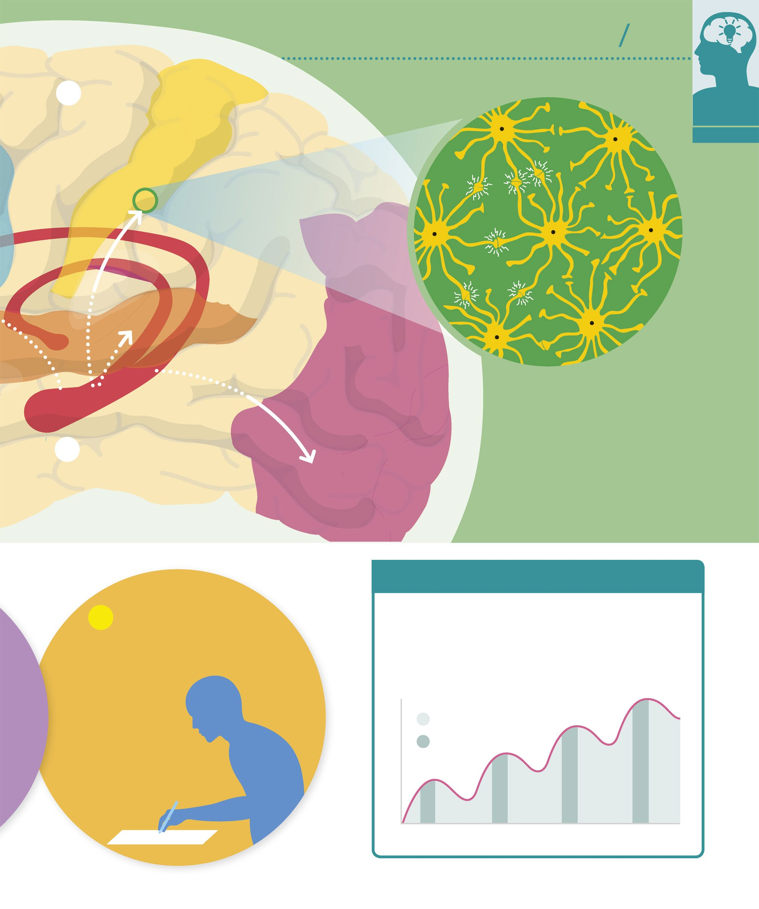
TRÍ NHỚ, HỌC TẬP VÀ TƯ DUY
Một tổ hợp nhất định gồm các tế bào thần kinh phát tín hiệu lặp đi lặp lại để củng cố trí nhớ
2
lưu giữ trí nhớ về những sự việc xảy ra ít gần đây hơn. Các loại trí nhớ khác nhau có thể được lưu trong những tổ hợp vùng khác nhau. VỎ NÃO CẢM GIÁC
VỎ NÃO THÍNH GIÁC
Các khớp thần kinh củng cố, lưu giữ trí nhớ dưới dạng một dấu vết.
1
hải mã, và một số trong đó — những cái sẽ trở thành trí nhớ — được mã hóa tại đó. Tăng cường dài hạn làm thay đổi các kết nối giữa các tế bào thần kinh trong hải mã để tạo ra trí nhớ. Vùng này đóng vai trò thiết yếu đối với trí nhớ mới.
TRUY XUẤT Khi bạn thức dậy, trí nhớ về những gì đã học được lưu giữ chắc chắn hơn. Nó cũng được liên kết với các sự thật khác, giúp dễ hồi tưởng hơn, và bạn có thể thấy mình hiểu rõ hơn các khái niệm cơ bản bên dưới.
LUYỆN TẬP LÀM NÊN SỰ HOÀN HẢO
Nếu bạn chỉ học một điều gì đó một lần, theo thời gian dấu vết trí nhớ đó sẽ phai nhạt khi các kết nối suy yếu. Bạn càng luyện tập hay ôn lại điều gì đó nhiều lần, các kết nối giữa các tế bào thần kinh càng trở nên mạnh mẽ và bạn càng có khả năng nhớ được nó trong tương lai.
CHÚ GIẢI
Độ bền của dấu vết trí nhớ.
Nghỉ ngơi.
Học tập.
- Trí nhớ được lưu trong vỏ não Các mạng lưới khắp vỏ não
- DẤU VẾT TRÍ NHỚ
- HẢI MÃ
- VỎ NÃO THỊ GIÁC
- Trí nhớ được hải mã mã hóa Những trải nghiệm được ghi nhận bởi
- 3
- Thời gian.
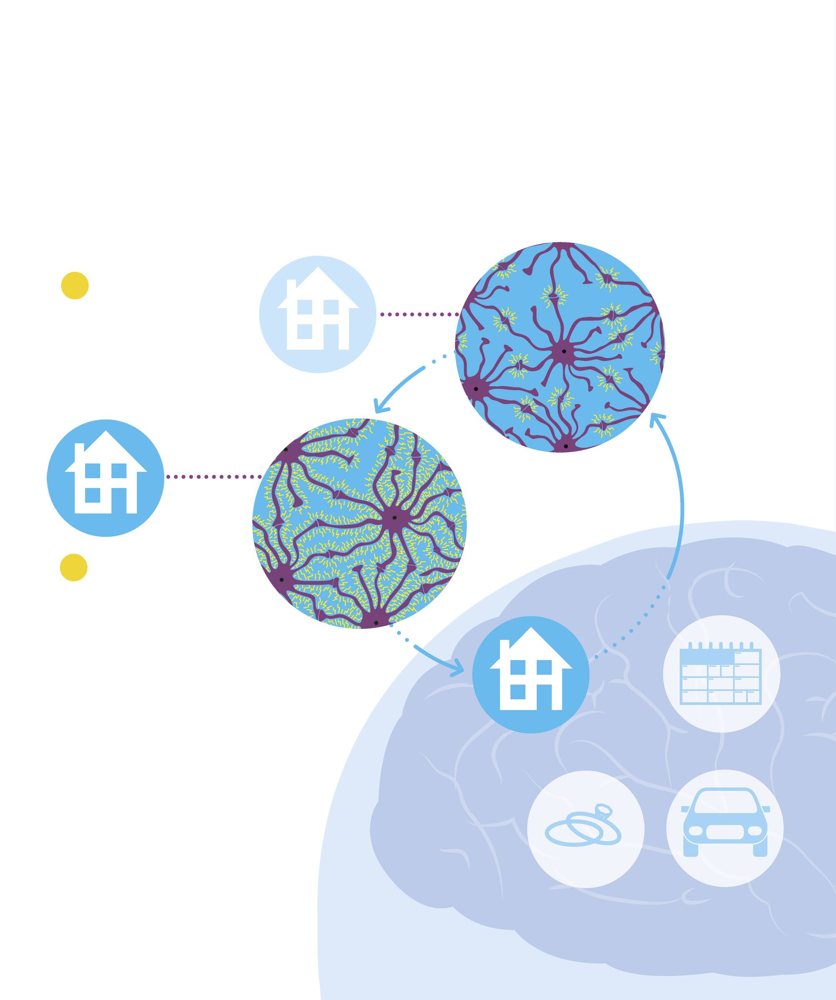
Hồi tưởng một trí nhớ không phải là quá trình thụ động như chúng ta từng nghĩ, giống như phát lại một bản ghi trong điện thoại. Ngược lại, não chúng ta tái tạo chủ động trải nghiệm của mình từ thông tin đã lưu giữ. Điều này mở ra khả năng sai sót, nghĩa là trí nhớ của chúng ta có thể thay đổi theo thời gian.
Kết nối giữa các tế bào thần kinh được kích hoạt trong lúc hồi tưởng.
1
trí nhớ dài hạn, mạng lưới tế bào thần kinh vỏ não lưu giữ nó được kích hoạt. Điều này củng cố các kết nối giữa các tế bào, vì thế trí nhớ ít có khả năng bị lãng quên trong tương lai.
Tế bào thần kinh trong vỏ não.
Kết nối giữa các tế bào thần kinh được củng cố.
Cảm xúc mạnh mẽ giúp các kết nối dễ củng cố hơn.
2
thường xuyên, các kết nối giữa các tế bào sẽ suy yếu và trí nhớ sẽ phai nhạt. Tuy nhiên, những trí nhớ gắn với cảm xúc mạnh mẽ ít có khả năng bị suy giảm theo thời gian.
Tái kích hoạt một trí nhớ
Khi chúng ta hồi tưởng một trí nhớ, chúng ta kích hoạt cùng một mạng lưới tế bào thần kinh đã phát tín hiệu trong trải nghiệm ban đầu, đưa nó trở lại trong tâm trí. Trong lúc được hồi tưởng, trí nhớ bước vào trạng thái linh hoạt, hay còn gọi là dễ biến đổi. Điều này có nghĩa là sau khi chúng ta ngừng nghĩ về trí nhớ đó, nó phải được củng cố lại và lưu trữ lại. Nếu thông tin mới xuất hiện trong lúc trí nhớ đang dễ biến đổi, nó có thể được lưu cùng với thông tin cũ. Điều này cho phép trí nhớ được thay đổi và cập nhật.
CÁC TRÍ NHỚ ĐƯỢC LƯU GIỮ
Trí nhớ được lưu giữ Hầu hết các trí nhớ được lưu giữ dài hạn ở vỏ não, nhưng bạn không thể chỉ ra vùng tương ứng với sinh nhật lần thứ 18 của mình, chẳng hạn. Mỗi trí nhớ được biểu diễn bằng một mạng lưới tế bào thần kinh trải rộng khắp não bộ.
- Trí nhớ trong vỏ não Mỗi lần chúng ta hồi tưởng một
- Vỏ não.
- TRÍ NHỚ ĐÃ LƯU
- Kết nối mạnh Nếu chúng ta không hồi tưởng một trí nhớ
- ĐÃ PHAI NHẠT
- CUỘC SỐNG GIA ĐÌNH
- KÍCH HOẠT LẠI

Trí nhớ sai
Khi một trí nhớ được củng cố lại, thông tin mới được lưu cùng với thông tin cũ. Nhưng khi chúng ta hồi tưởng trí nhớ đó lần sau, không thể phân biệt được cái nào là cái nào. Điều này có nghĩa là chúng ta có thể có những trí nhớ sai. Chỉ việc nói về một sự kiện cũng có thể làm thay đổi trí nhớ của ta về nó, vì thế trong các vụ kiện, nhân chứng phải được thẩm vấn cẩn thận để tránh làm sai lệch trí nhớ của họ.
1
các đoạn phim về tai nạn ô tô. Sau mỗi đoạn, họ phải mô tả điều đã xảy ra và trả lời các câu hỏi. Điều này có nghĩa là họ đang hồi tưởng và tái kích hoạt trí nhớ.
Thông tin mới Một số người tham gia được hỏi về tốc độ của những chiếc xe
2
khi chúng “chạm” nhau, trong khi những người khác được hỏi về tốc độ khi các xe “đâm tung”. Nhóm đầu đánh giá xe chậm hơn nhóm sau.
Cảm giác déjà vu có thể xuất hiện vì chúng ta nhận ra một điều gì đó trong môi trường nhưng không thể nhớ ra đó là gì. Điều này tạo ra một cảm giác quen thuộc mơ hồ.
Trí nhớ sai được hồi tưởng Một tuần sau, những người tham gia lại hồi tưởng đoạn phim
3
và được hỏi xem có mảnh kính vỡ nào không (thực ra không có). Đáng chú ý là nhiều người hơn trong nhóm “đâm tung” đã “nhớ” thấy kính vỡ. Những từ ngữ được dùng đã làm thay đổi trí nhớ của họ về sự kiện.
HỒI TƯỞNG SO VỚI NHẬN RA
Việc nhận ra một điều gì đó là quen thuộc khi được cho xem dễ dàng hơn nhiều so với việc hồi tưởng các chi tiết mà không có bất kỳ gợi ý nào. Chẳng hạn, chúng ta đều biết đồng xu 25 cent trông như thế nào, nhưng bạn có thể vẽ nó từ trí nhớ không?
- Trí nhớ đúng Các nhà khoa học yêu cầu người tham gia xem
- DÉJÀ VU LÀ GÌ?
- THÔNG TIN MỚI ĐƯỢC LƯU CÙNG THÔNG TIN CŨ
- SAU MỘT THỜI GIAN
- THỜI ĐIỂM HỒI TƯỞNG
- SO SÁNH
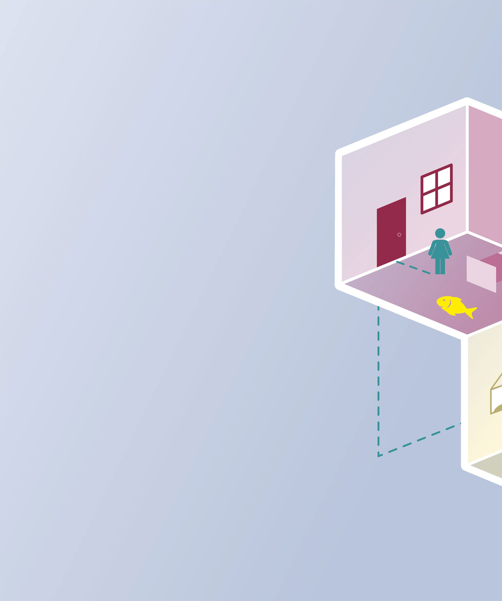
Khi đã hiểu về học tập và hồi tưởng, nghiên cứu cho thấy chúng ta có thể tìm ra cách tăng cường các quá trình này và cải thiện trí nhớ của mình. Một số kỹ thuật ghi nhớ tốt nhất, chẳng hạn như cung điện trí nhớ, thực ra lại là những kỹ thuật cổ xưa nhất.
Thường thì khi chúng ta “quên” một điều gì đó, thực ra chúng ta đã không lưu giữ nó đúng cách ngay từ đầu. Để tránh điều này, chúng ta phải xử lý thông tin một cách sâu sắc — chú ý hoàn toàn vào điều đang học, suy nghĩ về nó và xem nó liên quan thế nào đến những điều đã biết. Sau khi được lưu giữ, chúng ta cần đảm bảo thông tin ở lại đó, bằng cách luyện tập hoặc lặp lại điều mà chúng ta đang cố học. Chúng ta càng thường xuyên kích hoạt các cặp tế bào thần kinh cùng nhau, kết nối đó càng trở nên mạnh mẽ và chúng ta càng có khả năng nhớ được nó trong tương lai. Khoảng cách giữa các lần lặp lại cũng quan trọng — ôn tập 10 phút mỗi ngày trong sáu ngày tốt hơn là một tiếng đồng hồ trong một ngày.
bên ngoài — chẳng hạn như mùi hoa freesia đưa bạn trở lại ngày cưới của mình. Kỹ thuật cung điện trí nhớ dùng các liên tưởng và tác nhân gợi nhớ để giúp hồi tưởng các danh sách thông tin dài theo đúng thứ tự. Có lẽ điều quan trọng nhất chúng ta có thể làm cho trí nhớ của mình là ngủ đủ giấc. Nếu mệt mỏi, sự tập trung và chú ý của chúng ta suy giảm, và não bộ đơn giản là không ở trạng thái phù hợp để học. Giấc ngủ cũng rất cần thiết sau khi học để các trí nhớ được củng cố, phân loại và lưu trữ. Dưới đây là tóm tắt nhanh về cách tăng cường trí nhớ: • Xử lý thông tin một cách sâu sắc. • Ôn luyện thường xuyên. • Dùng các tín hiệu gợi nhớ và liên tưởng. • Ngủ thật nhiều.
Sức mạnh của tín hiệu gợi nhớ và sự nghỉ ngơi
Có những kỹ thuật chúng ta có thể dùng để hỗ trợ hồi tưởng thông tin, và nhiều kỹ thuật trong số đó dựa vào tín hiệu gợi nhớ. Những tác nhân gợi nhớ này có thể bên trong, chẳng hạn như các phương pháp ghi nhớ (mnemonics) cung cấp chữ cái đầu tiên của một danh sách các mục, từ đó gợi lại chính các mục đó. Hoặc chúng có thể
Dùng cung điện trí nhớ Hãy tưởng tượng bạn đang đi bộ qua một nơi quen thuộc, chẳng hạn như ngôi nhà của bạn. Tại những điểm then chốt, hãy hình dung các vật liên quan đến những từ bạn muốn nhớ, chẳng hạn như các món trong danh sách mua sắm. Để hồi tưởng danh sách đó, chỉ cần “đi” lại tuyến đường cũ — các vật này đóng vai trò như tác nhân gợi nhớ.
- Cải thiện trí nhớ của bạn
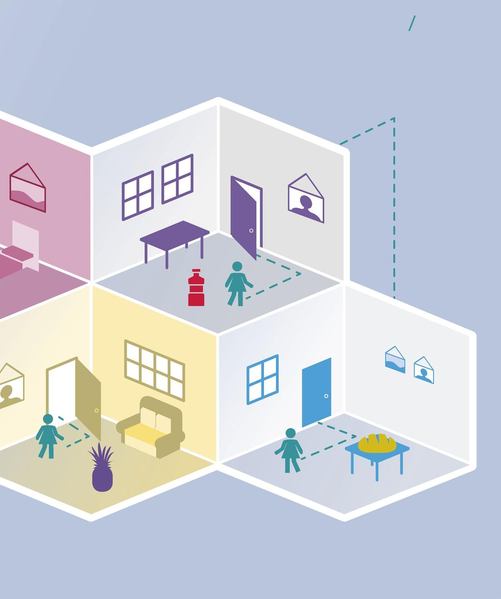
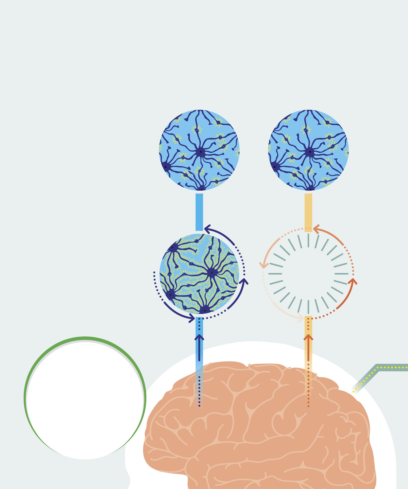
Có nhiều thuyết giải thích tại sao chúng ta quên mọi thứ. Một số nhà khoa học cho rằng tất cả trí nhớ của chúng ta vẫn còn trong não, nhưng đôi khi chúng ta mất khả năng truy cập vào chúng. Các trí nhớ của chúng ta cũng có thể can thiệp lẫn nhau.
Dấu vết trí nhớ vẫn tồn tại trong não; thường thì sự chặn đứng đó sau đó được gỡ bỏ và trí nhớ có thể được hồi tưởng.
TRÍ NHỚ
Sự lãng quên trong não bộ
Có nhiều tình trạng khiến chúng ta quên (xem tr.146–147). Nhìn chung, có hai khả năng về điều xảy ra trong não khi ta quên. Ý nghĩ đơn giản nhất là theo thời gian các trí nhớ phai nhạt đi; thông tin bị mất vì dấu vết đã hình thành không còn nữa. Nhưng bằng chứng cho điều này rất khó tìm, vì có thể có các yếu tố khác tham gia. Hầu hết chúng ta đều đã từng vật lộn để nhớ một thông tin mà sau đó lại bất ngờ hiện ra trong đầu — điều này cho thấy trí nhớ vẫn có thể tồn tại nhưng không thể truy cập được. Đó có thể là vì những trí nhớ tương tự khác đang can thiệp vào chúng, hoặc vì trong môi trường của chúng ta không có tín hiệu gợi nhớ nào để kích hoạt sự hồi tưởng đó. Người ta vẫn chưa biết liệu các kết nối giữa các tế bào thần kinh của một trí nhớ có biến mất hay chúng vẫn còn tồn tại nhưng chúng ta không thể truy cập được.
Trí nhớ không thể được truy cập hoặc đưa vào tâm trí, có thể tạo ra cảm giác “nằm ở đầu lưỡi”.
Việc rời khỏi một phòng thay đổi các tín hiệu môi trường giúp chúng ta ghi nhớ. Khi bạn quay lại chỗ cũ, trí nhớ thường được tái kích hoạt.
Trí nhớ được truy xuất Khi chúng ta hồi tưởng một điều gì đó, chúng ta phải tái kích hoạt mạng lưới tế bào thần kinh lưu giữ nó. Nếu điều này thành công, chúng ta nhớ được sự thật hay sự kiện đó.
Thất bại trong việc truy xuất Nếu việc hồi tưởng không thành công, có thể trí nhớ vẫn nằm trong vỏ não, chúng ta chỉ là không thể truy cập được nó (như trên). Hoặc các kết nối có thể đã bị mất (xem bên phải).
- TRÍ NHỚ
- HỒI TƯỞNG TRÍ NHỚ

QUÊN CHỦ ĐỘNG
Não bộ chúng ta gặp phải sự can thiệp, đặc biệt là khi các thông tin tương tự nhau. Việc học thông tin mới có thể chặn việc hồi tưởng thông tin cũ, và thông tin cũ cũng có thể ảnh hưởng đến thông tin mới. Những vấn đề này có thể phát sinh vì dấu vết trí nhớ sai được kích hoạt khi bạn cố hồi tưởng thông tin, chặn quyền truy cập vào dấu vết đúng. Hoặc có thể thông tin cũ làm gián đoạn quá trình củng cố thông tin mới, và nếu thành công, trí nhớ mới thực sự có thể thay thế trí nhớ cũ.
Việc quên có vẻ thụ động, nhưng bạn có thể chọn cách quên. Trong một nghiên cứu, vỏ não trước trán (prefrontal cortex) của những người tham gia — vùng liên quan đến sự ức chế — đã được kích hoạt khi họ được yêu cầu quên một từ cụ thể.
Can thiệp chủ động Những trí nhớ cũ có thể làm gián đoạn trí nhớ mới. Chẳng hạn, khi mới bắt đầu học tiếng Tây Ban Nha, bạn có thể bị can thiệp bởi các từ tiếng Pháp đã học từ nhỏ.
BONJOUR, ÇA VA?
Can thiệp hồi tưởng Nếu sau đó bạn định nói tiếng Pháp lại nói tiếng Tây Ban Nha, đó là những trí nhớ mới làm gián đoạn việc hồi tưởng trí nhớ cũ.
Trí nhớ phai nhạt Nếu vài tháng hay vài năm trôi qua trước khi bạn
3
trong vỏ não dưới dạng mạng lưới các kết nối. Chúng hình thành và củng cố qua vài tuần hoặc vài tháng. Việc hồi tưởng một trí nhớ sẽ kích hoạt nó, củng cố các khớp thần kinh và giúp trí nhớ dễ truy xuất hơn về sau.
hồi tưởng một trí nhớ, nó có thể bắt đầu phai nhạt. Nếu không được tái kích hoạt, các kết nối giữa các tế bào thần kinh không được củng cố. Những chi tiết cụ thể về các sự kiện đặc biệt, chẳng hạn như món ăn bạn đã ăn trong đám cưới của mình, có thể bị lãng quên.
các khớp thần kinh không được sử dụng sẽ trở nên yếu hơn và cuối cùng bị cắt bỏ, mang theo trí nhớ đó. Trí nhớ càng lâu không hoạt động thì càng có khả năng bị mất qua quá trình này.
- TRÍ NHỚ, HỌC TẬP VÀ TƯ DUY
- Các trí nhớ can thiệp
- HOLA, ¿CÓMO ESTÁS?
- Vỏ não trước trán.
- BONJOUR, ÇA VA?
- THÁNG
- THẬP KỶ
- NĂM
- Lưu trữ Các trí nhớ dài hạn được lưu
- Mất đi một trí nhớ Một thuyết về sự lãng quên cho rằng
- 1
- 2

Mất trí nhớ ngược chiều (retrograde amnesia)
Mọi người thường quên những khoảnh khắc ngay trước một tai nạn, nhưng có thể mất đi hàng tuần, thậm chí hàng năm. Một số ký ức, đặc biệt là những ký ức cũ hơn, sẽ trở lại chậm rãi.
Các vấn đề về trí nhớ tăng lên theo tuổi tác, và chứng sa sút trí tuệ ảnh hưởng đến một trong sáu người trên 80 tuổi. Đôi khi, tổn thương não, căng thẳng hoặc các yếu tố khác có thể khiến chúng ta không thể nhớ lại được (mất trí nhớ).
Mất trí nhớ xuôi chiều (anterograde amnesia)
Những người bị mất trí nhớ xuôi chiều không thể tạo ra ký ức mới. Họ vẫn nhớ mình là ai và giữ lại những ký ức từ trước khi bị tổn thương.
Mất trí nhớ (amnesia)
Đây là một đợt mất trí nhớ đột ngột, thường kéo dài vài giờ. Không có triệu chứng khác hay nguyên nhân rõ ràng.
Nếu ai đó bị chấn thương não làm tổn thương hải mã và các vùng lân cận, điều đó có thể gây ra chứng mất trí nhớ. Có hai loại chính, tùy thuộc vào việc bệnh nhân quên những ký ức đã lưu trữ trước sự kiện (mất trí nhớ ngược chiều) hay không thể tạo ra ký ức mới (mất trí nhớ xuôi chiều). Cũng có những trường hợp mất trí nhớ mà không có dấu hiệu tổn thương rõ ràng, chẳng hạn sau khi trải qua một sang chấn tâm lý. Thuốc và rượu có thể gây mất trí nhớ tạm thời, dù tình trạng này có thể trở thành vĩnh viễn nếu dùng một lượng lớn trong thời gian dài. Cũng có thể bị mất trí nhớ xuôi chiều và ngược chiều cùng lúc, đặc biệt khi hải mã bị tổn thương đáng kể. Tình trạng này được gọi là mất trí nhớ toàn thể.
Mất trí nhớ thời thơ ấu (infantile amnesia)
Mất trí nhớ thời thơ ấu là việc người ta thường không thể truy xuất những ký ức về các tình huống hay sự kiện trước độ tuổi từ hai đến bốn.
Mất trí nhớ phân liệt (dissociative amnesia)
Tình trạng này có thể được kích hoạt bởi căng thẳng hoặc sang chấn tâm lý. Bệnh nhân quên những ngày hoặc tuần quanh thời điểm sang chấn, hoặc trong những “trạng thái fugue” (fugue states) hiếm hoi, quên cả mình là ai.
Khi chúng ta già đi, việc đôi lúc quên và gặp khó khăn hơn trong việc học điều mới là bình thường. Việc tập trung chú ý và bỏ qua các yếu tố gây phân tâm trở nên khó khăn hơn, và bạn có thể quên những chuyện hằng ngày, chẳng hạn như tại sao lại lên lầu, thường xuyên hơn. Những trải nghiệm này khác với triệu chứng của chứng sa sút trí tuệ (xem tr.200), có thể bao gồm việc bị lạc ngay trong chính ngôi nhà của mình hoặc quên tên người bạn đời.
Mất niềm tin vào trí nhớ Người lớn tuổi thường bắt đầu
Ít dùng trí nhớ Các năng lực của não cũng như cơ bắp, ngày càng rơi vào một vòng lặp suy giảm nhận thức. Việc khuyến khích người lớn tuổi sử dụng trí nhớ, bằng cách đưa ra phản hồi cho thấy nó vẫn hoạt động tốt, có thể giúp ích.
Trí nhớ ngày càng kém Việc không rèn luyện trí nhớ có thể dẫn đến một
3
nghi ngờ trí nhớ của mình, coi những lần quên bình thường là dấu hiệu của sự suy giảm. Điều này có thể khiến họ ít dùng đến trí nhớ hơn.
khỏe hơn khi được sử dụng. Việc ghi chép lại hoặc tra cứu thay vì rèn luyện trí nhớ có thể làm cho nó kém đi.
- Các vấn đề
- Mất trí nhớ toàn thể thoáng qua (transient global amnesia)
- Lão hóa và trí nhớ
- 1
- 2
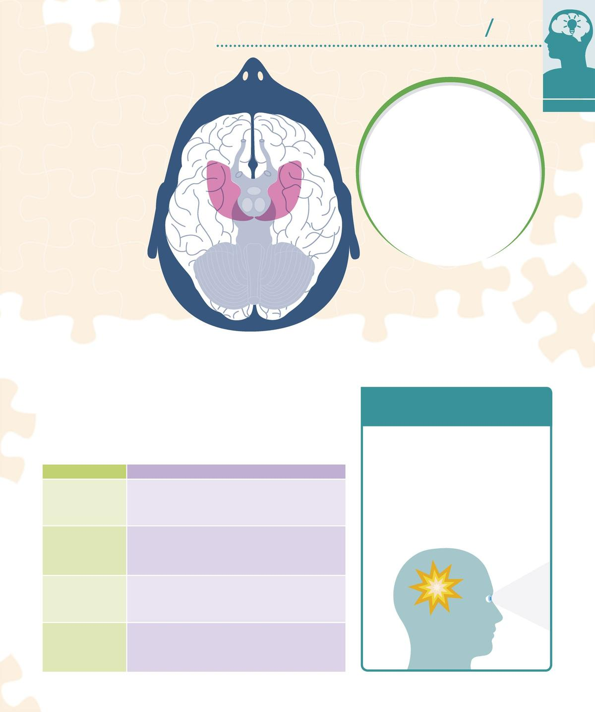
TRÍ NHỚ, HỌC TẬP VÀ TƯ DUY
Một trường hợp kỳ lạ Henry Molaison (1926–2008) là một công nhân lắp ráp người Mỹ bị các cơn động kinh dữ dội. Năm 1953, ông đã phẫu thuật để cắt bỏ một số đoạn của thùy thái dương trung gian (medial temporal lobe), gồm cả hai hải mã, nhằm điều trị chứng động kinh nặng. Ca mổ đã kiểm soát được các cơn động kinh, nhưng ông quên mất nhiều năm trước đó và bị mất trí nhớ xuôi chiều. Ông chỉ giữ được những ký ức khai báo mới (declarative memories) (xem tr.135) trong vài giây, nhưng vẫn có thể học các kỹ năng mới.
Cụm từ này được đặt ra trong Thế chiến I để mô tả một tác động người ta cho là do tiếng đạn nổ gây ra. Thực tế, những người lính đang chịu đựng chứng rối loạn căng thẳng sau sang chấn (PTSD), do sang chấn của chiến tranh gây ra.
T IỂU N Ã O
Những vùng lớn của thùy thái dương trung gian đã được cắt bỏ khỏi não ở mỗi bán cầu
Các vấn đề khác về trí nhớ
Nhiều yếu tố ảnh hưởng đến trí nhớ, từ căng thẳng ngắn hạn đến các sự kiện trong đời, chẳng hạn như có con. Những thay đổi về trí nhớ có thể liên quan đến sự thay đổi trong hóa sinh thần kinh của chúng ta. Ví dụ, cortisol được giải phóng khi chúng ta lo lắng, và các hormone tăng vọt ở phụ nữ mang thai vào khoảng thời gian sinh con. Những thay đổi lối sống như thiếu ngủ cũng đóng một vai trò.
RỐI LOẠN CĂNG THẲNG SAU SANG CHẤN
Thông thường, khi lưu trữ ký ức, cảm xúc dần phai nhạt theo thời gian, nên chúng ta nhớ lại các sự kiện trong quá khứ mà không phải sống lại chúng. Trong chứng rối loạn căng thẳng sau sang chấn (PTSD), người bệnh không thể tách rời ký ức khỏi cảm xúc, và những ký ức xâm lấn đưa nỗi sợ hãi tràn về. Những ký ức này có thể được kích hoạt bởi cảnh vật hay âm thanh, và thường thì bệnh nhân không nhận biết được các yếu tố kích hoạt đó.
Căng thẳng
Căng thẳng vừa phải, ngắn hạn có thể giúp hình thành ký ức dễ dàng hơn, nhưng lại khó nhớ lại những điều đã học. Điều này có thể giải thích tại sao cảm giác “đầu óc trống rỗng” trong kỳ thi lại phổ biến đến vậy.
Lo âu
Căng thẳng kéo dài hay mạn tính, như ở những người bị rối loạn lo âu, có thể làm tổn thương hải mã và các cấu trúc trí nhớ khác của não, gây ra các vấn đề về trí nhớ.
Trầm cảm
Trầm cảm có thể ảnh hưởng đến trí nhớ ngắn hạn và khiến người ta khó nhớ lại chi tiết của những sự kiện đã trải qua. Người khỏe mạnh có xu hướng nhớ điều tích cực tốt hơn điều tiêu cực. Ở người trầm cảm, điều này bị đảo ngược.
“Não bộ thời kỳ mang thai”
Phụ nữ mang thai có thể bị suy giảm nhẹ ở một loạt khả năng nhận thức, dù những thay đổi này có lẽ chỉ bản thân họ nhận ra. Sau khi con chào đời, thiếu ngủ có thể làm các vấn đề về trí nhớ nặng thêm.
- “SỐC ĐẠN” LÀ GÌ?
- T H Ù Y T R Á N
- H Ả I M Ã
- NHÌN TỪ BÊN DƯỚI
- NGUYÊN NHÂN
- GIẢI THÍCH

Mặc dù một số trẻ em thể hiện những kỹ năng đáng kinh ngạc, hầu hết những người có trí nhớ phi thường không sinh ra đã như vậy. Thay vào đó, họ sử dụng các kỹ thuật đặc biệt và luyện tập rất nhiều, đôi khi dẫn đến những thay đổi vật lý trong não.
Rèn luyện trí nhớ phi thường
Các nhà khoa học nghiên cứu những tài xế taxi Luân Đôn đang học the Knowledge (“kiến thức”, một mạng lưới khổng lồ gồm các con đường và địa danh) đã nhận thấy thể tích hải mã sau của họ tăng lên khi khả năng định hướng được cải thiện. Điều này có thể xảy ra nhờ sự ra đời của các nơ-ron mới hoặc sự phát triển của các sợi nhánh hiện có (xem tr.20). Tuy nhiên, trong các bài kiểm tra trí nhớ không liên quan đến địa danh Luân Đôn, các tài xế lại làm kém hơn nhóm đối chứng. Điều này gợi ý rằng trí nhớ là có hạn, và việc cải thiện một lĩnh vực có thể phải đánh đổi bằng lĩnh vực khác.
Cấu trúc hải mã Hai hải mã của chúng ta — mỗi bên một cái ở hai phía não — rất quan trọng cho việc học và trí nhớ. Chúng có thể được chia thành phần sau (phía sau) và phần trước (phía trước), trong đó phần sau đặc biệt quan trọng cho việc định hướng không gian.
TRÍ NHỚ CHỚP SÁNG
Những người bị khuyết tật trí tuệ đôi khi thể hiện những khả năng đáng kinh ngạc trong một lĩnh vực cụ thể, thường liên quan đến trí nhớ. Đây được gọi là hội chứng savant. Nhiều người đặc tài bị tự kỷ, nhưng hội chứng cũng có thể được kích hoạt bởi chấn thương đầu nặng. Một số người có thể tính được thứ trong tuần của bất kỳ ngày nào. Những người khác thì nhớ mọi thứ họ đọc hoặc có thể vẽ những bức tranh chi tiết về cảnh họ chỉ nhìn thấy một lần. Các nhà khoa học cho rằng những tài năng này phát triển nhờ sự tập trung và hứng thú cực độ vào một lĩnh vực. Cũng có bằng chứng họ nhìn thế giới như những khối xây dựng chứ không phải những bức tranh toàn chỉnh, bằng cách truy cập thông tin tri giác mà hầu hết chúng ta không nhận biết được một cách có ý thức.
Mọi người thường nhớ mình đang ở đâu khi nhận được tin tức gây xúc động mạnh, và ký ức ấy dường như cực kỳ sống động và chi tiết. Đó được gọi là trí nhớ chớp sáng (flashbulb memories). Tuy nhiên, các nghiên cứu cho thấy chúng ta cũng dễ nhầm về những “bức ảnh chụp tức thời” này như về bất kỳ ký ức nào khác.
79% NAM, 21% NỮ — ĐA SỐ BẨM SINH
Theo một cơ sở dữ liệu về những người đặc tài do cha mẹ hoặc người chăm sóc họ cung cấp, đại đa số (90 phần trăm) sinh ra đã như vậy, và trong số đó, đa số là nam giới.
- Các loại trí nhớ
- Hải mã sau, tham gia vào việc định hướng không gian
- Hải mã trước
- 10% MẮC PHẢI Ở NGƯỜI ĐẶC TÀI
- Hội chứng savant (savant syndrome)
- 90% BẨM SINH

Hải mã sau trở lại kích thước ban đầu
Trước khi huấn luyện, tài xế taxi có hải mã với các vùng có kích thước bình thường
Kích thước như nhau Ở thời điểm bắt đầu nghiên cứu, các nhà khoa học
3
đã quét não của những người tham gia để đo kích thước hải mã của họ. Không có sự khác biệt giữa các tài xế taxi đang huấn luyện và nhóm đối chứng.
“the Knowledge” có hải mã sau lớn hơn so với nhóm đối chứng hoặc những người huấn luyện không đậu. Một số nghiên cứu thấy phần trước hải mã của họ nhỏ hơn.
giống của nhóm đối chứng hơn nhiều. Điều này gợi ý rằng những thay đổi ở hải mã đảo ngược lại khi tài xế taxi ngừng dùng “the Knowledge” hằng ngày.
CON NGƯỜI CÓ THỂ NHỚ MỌI THỨ KHÔNG?
Không hề có thứ gọi là trí nhớ chụp ảnh — không ai có thể nhớ từng trang chữ hay hình ảnh như thể chúng đang ở ngay trước mắt. Gần nhất là trí nhớ eidetic (eidetic memory), xuất hiện ở 2–10 phần trăm trẻ em. Sau khi nhìn vào một hình ảnh, những người “eidetiker” (eidetikers) tiếp tục “nhìn thấy” nó trong trường thị giác của mình, cho đến khi nó dần phai nhạt hoặc biến mất khi họ chớp mắt.
Trí nhớ hoàn hảo không tồn tại, nhưng một số ít người có trí nhớ tự truyện vượt trội (superior autobiographical memory), giúp họ nhớ đặc biệt rõ các sự kiện trong cuộc đời mình.
Hình ảnh không trọn vẹn Các nghiên cứu đã chỉ ra rằng hình ảnh eidetic không hoàn hảo. Trẻ có thể không nhớ được tất cả các chữ cái trong một từ được cho xem, hoặc chúng có thể bịa ra chi tiết, ví dụ “nhớ” lại một thứ trong bức tranh vốn không có ở đó.
Đôi khi, những người có trí nhớ eidetic nhớ rất rõ những chi tiết vốn không có trong cảnh ban đầu, chẳng hạn như màu của mái nhà này
- TRÍ NHỚ, HỌC TẬP VÀ TƯ DUY
- CHÚ GIẢI
- Hải mã của tài xế taxi
- Hải mã sau của tài xế taxi
- Hải mã sau tăng thể tích
- Thay đổi giải phẫu Những tài xế taxi đang huấn luyện đã vượt qua
- Trở lại bình thường Não của những tài xế taxi đã nghỉ hưu trông
- 1
- 2
- Trí nhớ “chụp ảnh”
- TRÍ NHỚ
- ẢNH CHỤP
- TRẺ EM

Mạng lưới liên quan đến việc kiểm tra giả thuyết — một thành phần không thể thiếu của trí thông minh
Có nhiều thuyết khác nhau về cách trí thông minh tiến hóa, về bản chất thực sự của nó, và về những yếu tố then chốt tạo nên trí thông minh cao.
1
Trí thông minh là khả năng của chúng ta trong việc thu thập thông tin từ môi trường xung quanh, đưa thông tin đó vào một kho tri thức, rồi áp dụng nó vào những tình huống và ngữ cảnh mới. Dù có nhiều mô hình về cách trí thông minh của con người tiến hóa, ngôn ngữ và đời sống xã hội chắc chắn đã đóng một vai trò, vì chúng cho phép tri thức được truyền lại từ thế hệ này sang thế hệ khác. Sự tiến hóa của trí thông minh con người đã dẫn đến thành công của chúng ta như một loài, giúp ta thích nghi và sinh sống ở gần như mọi môi trường trên Trái Đất.
được thu thập qua nhiều trải nghiệm khác nhau, được hiểu và được lưu giữ để xử lý.
2
thông tin được phân tích một cách phê phán, so sánh với tri thức hiện có và đặt vào đúng ngữ cảnh.
Thùy trán chứa các mạng lưới quy mô lớn liên quan đến trí thông minh
Các thuyết về trí thông minh Một số nghiên cứu cho rằng sự kết nối giữa vỏ não trước trán và vỏ não đỉnh, cùng những vùng nhỏ của tế bào thần kinh (mạng lưới), là chìa khóa của trí thông minh cao (phía trên). Những giải thích khác (bên phải) cũng đã được đưa ra, cho rằng trí thông minh liên quan đến sự kết nối trên toàn bộ não.
3
tri thức được áp dụng vào một tình huống hay vấn đề mới, thay vì chỉ được lặp lại từ trí nhớ.
Hiện sinh
Nhận ra các đặc điểm của thực vật và động vật, rồi suy ra những hiểu biết dựa trên điều đã biết về thế giới tự nhiên.
Dùng quan sát, thấu thị và tri thức để giải thích thế giới bên ngoài cùng vai trò của con người trong đó.
Người ta thường nói về trí thông minh theo nghĩa rộng, nhưng có một thuyết cho rằng tồn tại nhiều loại trí thông minh. Thuyết này thừa nhận rằng con người có thể có năng lực thu thập và áp dụng tri thức trong những lĩnh vực cụ thể. Chẳng hạn, một người có thể gặp khó khi giải bài toán nhưng lại tái hiện được một bản nhạc chỉ sau một lần nghe. Một số người cho rằng thuyết này đưa ra định nghĩa thực tế hơn về trí thông minh, trong khi người chỉ trích lại cho rằng những “trí thông minh” ấy chỉ là năng khiếu.
Giao tiếp giữa các cá nhân
Nhạy cảm với nhịp, cao độ, âm sắc, giai điệu và chất âm, rồi áp dụng điều đó vào việc chơi và sáng tác nhạc.
Nhạy cảm với tâm trạng, cảm xúc và động cơ của người khác. Áp dụng điều đó vào các mối quan hệ và vào việc giúp nhóm vận hành.
Cơ thể – vận động
Nhanh với con số và dễ dàng lượng hóa sự vật. Giải quyết vấn đề một cách có hệ thống và tư duy phê phán về các vấn đề.
Dùng nhận thức cơ thể nhạy bén, sự phối hợp và cảm giác thời gian để làm chủ các hoạt động thể chất như thể thao.
- Trí thông minh là gì?
- Thu thập thông tin
- Xử lý thông tin mới
- Áp dụng điều đã có
- Các loại trí thông minh
- Tự nhiên
- Âm nhạc
- Lôgic – toán học
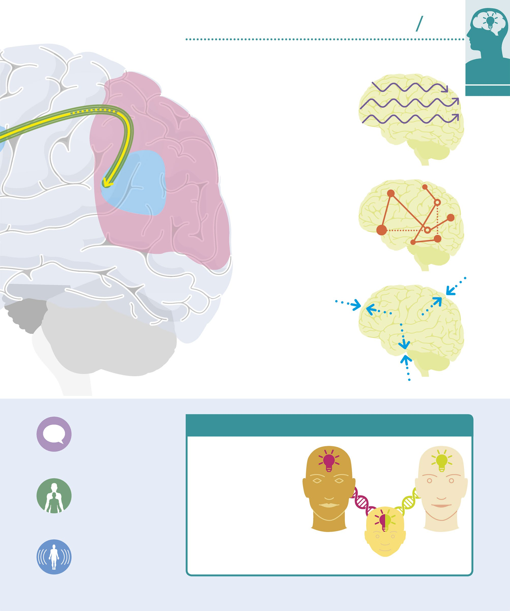
TRÍ NHỚ, HỌC TẬP VÀ TƯ DUY
Bó cung (arcuate fasciculus) là một kết nối quan trọng giữa các vùng não liên quan đến trí thông minh
Sóng gamma và sóng beta là các dao động thần kinh
Sóng não Khi sóng gamma và sóng beta xuất hiện cùng nhau, sự truyền tín hiệu thần kinh diễn ra hiệu quả và ít bị phân tâm hơn.
Mạng lưới liên quan đến các thành phần của trí thông minh, bao gồm cả tư duy trừu tượng
Toàn bộ não bộ đều tham gia vào trí thông minh
Thuyết thần kinh học mạng lưới Trí thông minh không nằm ở các vùng cụ thể, mà nằm ở cách toàn bộ não bộ trao đổi thông tin.
Tính dẻo (plasticity) là khả năng tổ chức lại của não bộ
Tính dẻo Trí thông minh cao hơn liên quan đến khả năng thiết lập các kết nối thay thế và bổ sung trong não.
Thùy đỉnh có nhiều chức năng liên quan đến trí thông minh, bao gồm cả nhận thức không gian
TRÍ THÔNG MINH ĐƯỢC DI TRUYỀN
Có cách dùng từ tài tình và dùng sự hiểu đó để sáng tác truyện, truyền đạt các khái niệm phức tạp và học ngôn ngữ.
Các đặc điểm cơ thể không phải là những đặc tính duy nhất được truyền từ thế hệ này sang thế hệ khác. Trên thực tế, trí thông minh được cho là một trong những đặc tính hành vi có tính di truyền cao nhất ở con người. Người ta ước tính rằng từ 50 đến 85 phần trăm sự khác biệt về trí thông minh ở người trưởng thành có thể giải thích bằng di truyền.
Nội tâm
Sự hiểu biết sâu sắc về bản thân, có thể dùng để dự đoán phản ứng và cảm xúc của chính mình trước những tình huống mới.
Thị giác – không gian
Có thể dễ dàng đánh giá khoảng cách, nhận ra những chi tiết nhỏ và giải quyết các vấn đề không gian bằng cách hình dung thế giới trong 3-D.
- Ngôn ngữ
- MẸ
- CHA
- TRẺ EM
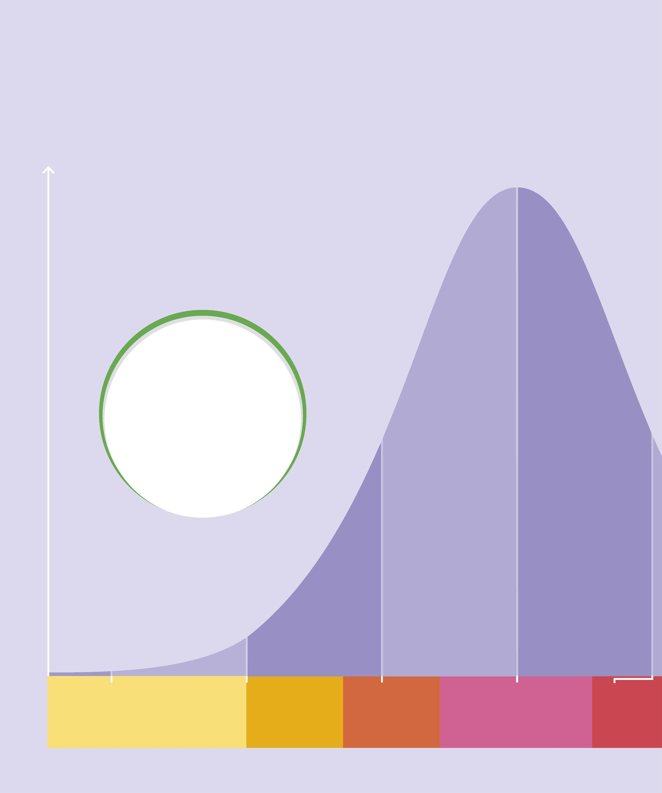
Các thước đo trí thông minh đã được dùng từ hơn một thế kỷ trước, nhưng phương pháp sử dụng và cách người ta dùng kết quả vẫn còn đang bị tranh cãi gay gắt, ngay cả ngày nay.
Điểm IQ được chuẩn hóa nên đường cong luôn tập trung quanh điểm 100
Phân bố chuẩn (normal distribution) Khi điểm từ các bài kiểm tra IQ được vẽ lên biểu đồ tần suất, kết quả là một đường cong hình chuông, hay còn gọi là phân bố chuẩn, trong đó điểm của hầu hết mọi người tập trung đối xứng quanh giá trị trung bình. Trong mỗi 100 người, 68 người có điểm IQ nằm giữa 85 và 115.Ở cả hai đầu cao và thấp của thang điểm, tần suất giảm rất nhanh.
Điểm IQ của trẻ em có thể thay đổi khá nhiều, với những biến động mạnh có thể xảy ra trong những khoảng thời gian tương đối ngắn. Điểm IQ có xu hướng ổn định khi trưởng thành.
IQ
Thương số thông minh (intelligence quotient, IQ) là tổng điểm lấy từ một bài kiểm tra chuẩn hóa đo lường các khía cạnh của trí thông minh, bao gồm tư duy phân tích và nhận diện không gian. Có hơn một chục bài kiểm tra cho ra điểm IQ, và chúng đã được dùng để phân luồng học sinh và tuyển chọn vào các nghề như quân đội. Dù các bài kiểm tra IQ đáng tin cậy về mặt thống kê, người ta vẫn cho rằng chúng thiên vị về các nền văn hóa nơi chúng ra đời.
Sau một phán quyết của tòa án Hoa Kỳ năm 2002, tù nhân có IQ dưới 70 không thể bị xem xét cho án tử hình
0,1%
2,1%
34,1%
13,6%
DANH MỤC
55
70
85
100
115
TRUNG BÌNH CAO
TRUNG BÌNH
CỰC THẤP
XA DƯỚI MỨC TRUNG BÌNH
TRUNG BÌNH THẤP
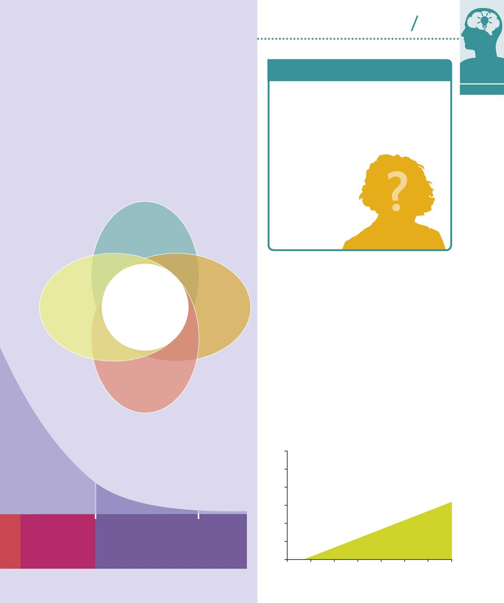
Các phương án thay thế IQ
KỶ LỤC IQ
IQ không phải là thước đo duy nhất của trí thông minh. Có một số phương án thay thế, nhiều phương án trong số đó dựa chủ yếu vào hình ảnh, với tranh, ảo giác thị giác hay chuỗi mẫu hình làm nền tảng. Kiểm tra tâm lý (psychometric testing) là cách tiếp cận thường được dùng trong tuyển dụng để đánh giá năng khiếu của một người — chẳng hạn, để đánh giá sự đồng cảm khi chọn người chăm sóc. Những người làm tốt bài kiểm tra IQ cũng có khả năng làm tốt các bài kiểm tra khác. Điều này có thể cho thấy mức độ cao của năng lực nhận thức tổng thể, đôi khi được gọi là yếu tố thông minh chung (g).
Những tuyên bố về IQ phi thường (gồm cả điểm trên 200) thường được đưa ra nhưng hiếm khi được kiểm chứng. Người Mỹ Marilyn vos Savant từng giữ kỷ lục IQ (228) trong Sách Kỷ lục Guinness từ 1986 đến 1989, sau đó Guinness bỏ hạng mục này vì kết luận rằng các bài kiểm tra không đủ đáng tin cậy. Người ta cũng từng cố đo IQ của những người không thể làm kiểm tra được nữa. Chẳng hạn, Albert Einstein được ước tính có IQ trên 160.
Trí thông minh chung Khả năng làm tốt ở nhiều lĩnh vực trí thông minh cụ thể được thể hiện qua yếu tố thông minh chung.
IQ CÓ ĐANG TĂNG LÊN KHÔNG?
Có bằng chứng cho thấy IQ tăng lên trên diện rộng. Khi các bài kiểm tra IQ được chỉnh sửa lại sau mỗi 10–20 năm, những người làm bài để chuẩn hóa bài kiểm tra mới cũng được yêu cầu làm bài kiểm tra cũ, và họ luôn ghi điểm cao hơn ở bài cũ. Nói cách khác, nếu người lớn Mỹ ngày nay làm một bài kiểm tra IQ từ những năm 1920, đại đa số sẽ đạt mức cực cao, trên 130. Điều này được ủng hộ bởi bằng chứng từ khắp nơi trên thế giới, dù tốc độ tăng nhanh nhất ở các nước đang phát triển. Bằng chứng gần đây cho thấy sự gia tăng này, được gọi là hiệu ứng Flynn (Flynn effect), đã bắt đầu đi vào ổn định.
SỐ HỌC
Hiệu ứng Flynn Tại Hoa Kỳ, điểm IQ trung bình đã tăng 3 điểm mỗi thập kỷ kể từ giữa thế kỷ 20.
Các thành viên của tổ chức Mensa có IQ khoảng 132 trở lên
- Các phương án thay thế IQ
- CƠ KHÍ
- TRÍ THÔNG MINH CHUNG (g)
- NGÔN NGỮ
- KHÔNG GIAN
- Mức tăng điểm IQ 20
- 13,6%
- 2,1%
- 0,1%
- 130
- 145
- XA TRÊN MỨC TRUNG BÌNH
- CỰC CAO

Tất cả chúng ta đôi lúc có một tia sáng sáng tạo, nhưng điều khiến một số người sáng tạo hơn người khác liên quan đến các kết nối và sự phối hợp giữa ba mạng lưới não khác nhau.
Khoa học của sự sáng tạo
Sự sáng tạo — khả năng đưa ra những ý tưởng mới và hữu ích — liên quan đến ba mạng lưới não riêng biệt: mạng lưới chế độ mặc định (default mode network), mạng lưới nổi bật (salience network) và mạng lưới điều hành trung ương (central executive network). Dù các mạng lưới này có liên hệ với nhau, chúng thường không hoạt động cùng lúc. Tuy nhiên, các nghiên cứu chụp cộng hưởng từ chức năng (fMRI) ở những người được yêu cầu thực hiện nhiệm vụ cụ thể cho thấy những người có thể chuyển đổi nhanh giữa các mạng lưới này vào thời điểm thích hợp có phản ứng sáng tạo hơn với nhiệm vụ. Mối tương quan mạnh đến mức, trên thực tế, người ta có thể dự đoán sự sáng tạo của một người dựa trên độ bền của kết nối giữa các mạng lưới này.
1
mạng lưới chế độ mặc định hoạt động. Mạng lưới này gồm các vùng não liên quan đến tự xét mình, nghĩ về người khác, và suy nghĩ về quá khứ hay tương lai — tất cả những điều ta nghĩ đến khi mơ mộng.
Bộ não sáng tạo
Dù di truyền đóng một vai trò trong sự sáng tạo, các yếu tố khác cũng quan trọng không kém. Mức thấp của noradrenaline có thể hỗ trợ sự sáng tạo, vì chất dẫn truyền thần kinh này chuyển hướng chú ý từ bên trong ra các kích thích bên ngoài. Dù điều đó có thể giúp ích cho phản ứng chiến hay chạy, những ý tưởng sáng tạo nói chung lại nảy sinh từ các nguồn bên trong. Sự sáng tạo cũng có thể cần một nền tảng tri thức vững chắc — chẳng hạn, các nhà soạn nhạc thường viết những tác phẩm hay nhất sau nhiều thập kỷ sáng tác.
- M Ạ N G L Ư Ớ I C H Ế Đ Ộ M Ặ C Đ Ị N H
- Mạng lưới này được kích hoạt khi tâm trí lang thang
- Mơ mộng Khi tâm trí lang thang,
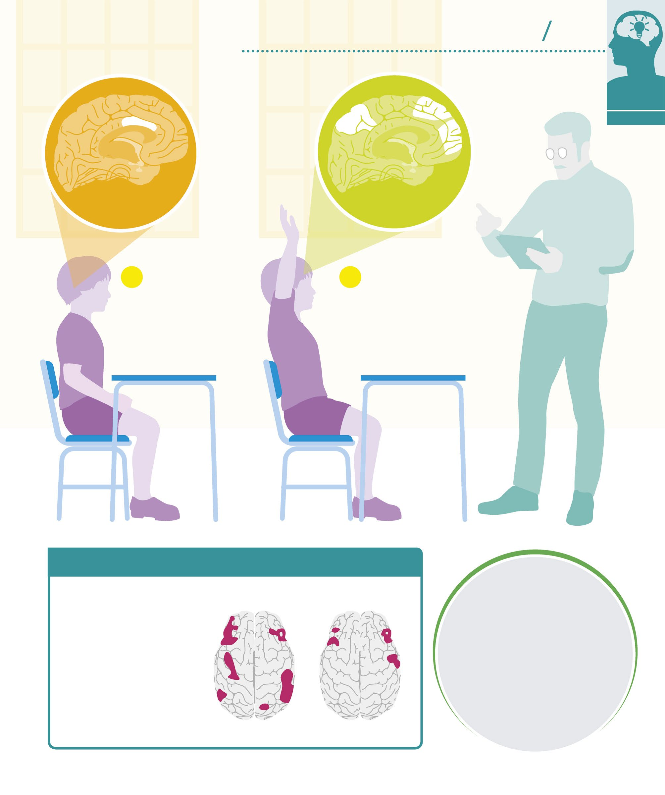
M Ạ N G L Ư Ớ I Đ I Ề U H À N H T R U N G Ư Ơ N G
Triển khai các mạng lưới khác dựa trên thông tin nhận được
Các vùng được kích hoạt để duy trì sự chú ý vào một nhiệm vụ cụ thể
3
phát hiện thông tin cảm giác để xác định xem mạng lưới điều hành trung ương có nên hoạt động hay không. Ví dụ, khi nghe thấy tên mình trong lúc mơ mộng, mạng lưới nổi bật kích hoạt một sự chuyển đổi.
huy động bộ não có ý thức để suy nghĩ và duy trì sự tập trung vào một nhiệm vụ. Các nghiên cứu cho thấy mạng lưới chế độ mặc định được kích hoạt lại trong vòng một phần nhỏ của giây sau khi nhiệm vụ hoàn tất.
Sự ngừng hoạt động ở vỏ não trước trán bên
Trong một nghiên cứu, các nhạc công jazz được yêu cầu chơi piano bên trong máy chụp cộng hưởng từ chức năng. Hoạt động não của họ được ghi lại khi họ chuyển từ chơi nhạc đã học thuộc sang jazz ngẫu hứng. Kết quả cho thấy các vùng não chịu trách nhiệm đánh giá hành động của chính chúng ta và sự ức chế ít hoạt động hơn trong lúc ngẫu hứng.
Bộ não đặc biệt giỏi trong việc cấu hình lại và kết nối thông tin khi nó không ở chế độ hướng theo nhiệm vụ.
- TRÍ NHỚ, HỌC TẬP VÀ TƯ DUY
- M Ạ N G L Ư Ớ I N Ổ I B Ậ T
- Chuyển đổi Mạng lưới nổi bật
- Tập trung Mạng lưới điều hành trung ương
- 2
- BỘ NÃO KHI CHƠI NHẠC JAZZ
- Hoạt động ở vỏ não trước trán bên
- NHẠC ĐÃ HỌC THUỘC
- NHẠC NGẪU HỨNG

Cũng như việc tập thể hình giúp cơ bắp phát triển và cải thiện sức khỏe tim mạch, có những hoạt động có thể cải thiện “thể lực sáng tạo” của bạn bằng cách khiến các vùng não phối hợp với nhau theo cách mới.
Để thúc đẩy sự sáng tạo, trước hết bạn phải dỡ bỏ các rào cản với nó. Căng thẳng, áp lực thời gian và thiếu ngủ hay thiếu vận động được biết đến là những kẻ thù của sự sáng tạo. Mọi người thường sáng tạo khi họ được nghỉ ngơi, vui vẻ và có thể để tâm trí lang thang tự do. Nhiều người cho rằng những ý tưởng hay nhất của họ đến khi đang tắm sáng hoặc đi bộ đến chỗ làm. Có vẻ ý tưởng tuôn chảy tự do nhất trong não khi nó không ở trạng thái hướng theo nhiệm vụ, mà ở một tình trạng gọi là trạng thái nghỉ ngơi (resting state).
Các hoạt động thân thiện với sự sáng tạo tạo ra những kết nối thần kinh mới. Chẳng hạn, học chơi một nhạc cụ mở ra và củng cố các liên kết giữa những vùng não khác nhau. Chỉ đơn giản là thay đổi thói quen cũng có thể nuôi dưỡng sự sáng tạo, vì thế hãy chọn một đường đi làm thú vị hơn, một màu bạn thường không mặc, hoặc một công thức nấu ăn mới. Hãy ở bên những người cùng chí hướng và sáng tạo nhiều nhất có thể. Dù ở trong một phòng triển lãm hay một nhà kho vườn, những đầu vào mới kích thích những ý tưởng mới. Những thử thách không thể giải quyết khuyến khích cách tư duy mới lạ. Chẳng hạn, bạn nghĩ được bao nhiêu cách dùng một cái kẹp giấy? Nếu bạn bị kẹt ở một vấn đề, hãy tạo một chút khoảng cách về tinh thần với nó. Hãy tưởng tượng một người đến từ quốc gia, thời kỳ hoặc nhóm tuổi khác sẽ giải quyết vấn đề đó thế nào. Cho phép bản thân ngắt kết nối. Nếu bạn đang đứng xếp hàng, đừng mặc định lấy điện thoại ra xem email hay mạng xã hội; thay vào đó, hãy để đầu óc thả lỏng và để ý tưởng tuôn chảy. Lần tới khi bạn bí ý tưởng, hãy thử một trong những điều sau: • Ngủ đủ, giảm căng thẳng và vận động. • Học một kỹ năng mới. Dành thời gian với những người sáng tạo khác. • Tư duy ngoài khuôn khổ. Nghĩ cách mới để giải quyết vấn đề cũ. • Tắt các thiết bị số để não có thời gian nghỉ ngơi.
Bồi dưỡng những kết nối mới
Thói quen giúp điều chỉnh cuộc sống hằng ngày, nhưng chúng cũng củng cố các đường dẫn thần kinh hiện có.
- Cách thúc đẩy sự sáng tạo của bạn
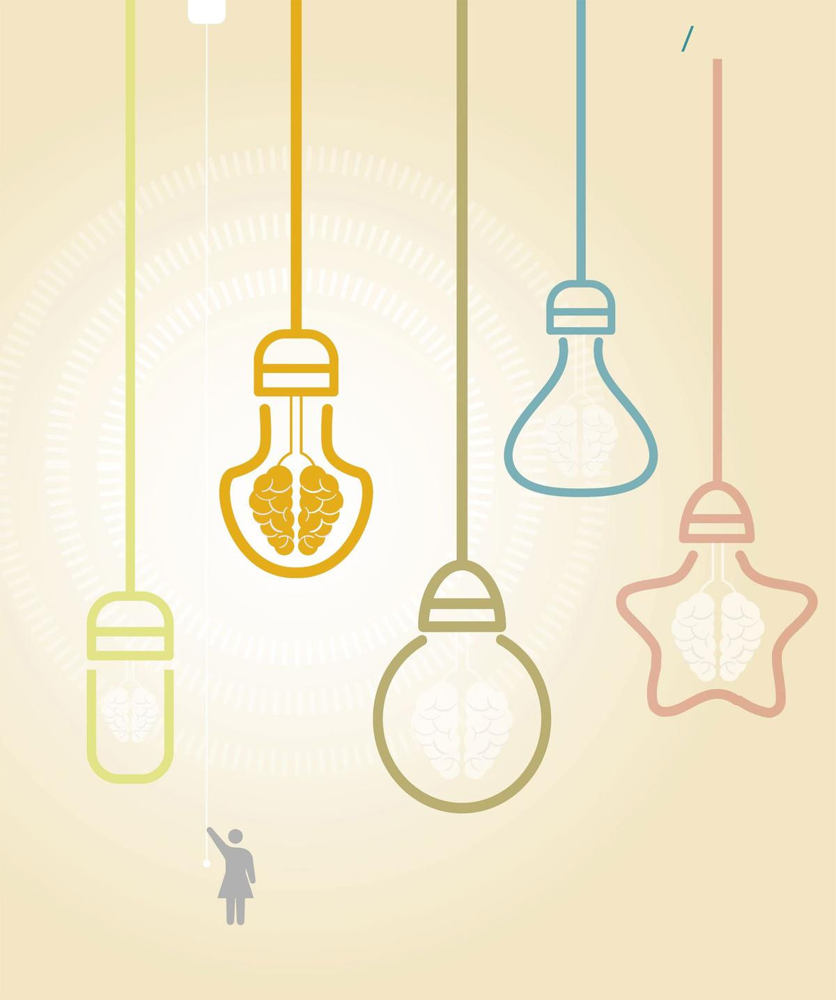

Não bộ của chúng ta có thể chắt lọc thông tin phức tạp, tiếp nhận những quan sát không thể giải thích được rồi đánh giá và phân loại chúng. Từ đó, chúng ta hình thành các mệnh đề— đúng hay sai—để dẫn dắt mình trong cuộc sống.
Tri thức
Niềm tin của chúng ta phát triển từ những gì ta nghe, thấy và trải nghiệm, từ sự tương tác với người khác và với môi trường xung quanh. Chúng đan xen với cảm xúc của ta, và đó là lý do phản ứng cảm xúc thường được gợi ra khi những niềm tin đó bị thách thức. Niềm tin được chấp nhận như là chân lý, dù có bằng chứng hay không. Sau đó, niềm tin trở thành một bộ lọc, trong đó thông tin không ủng hộ những niềm tin đó bị loại bỏ, có thể làm hạn hẹp tri giác của ta về thế giới. Tuy nhiên, niềm tin không phải là bất biến—mỗi người trong chúng ta đều có quyền lựa chọn và thay đổi niềm tin của mình.
Cả sự kiện tích cực lẫn tiêu cực đều định hình cách bạn nhìn nhận thế giới.
Điều bạn biết ảnh hưởng đến niềm tin và thách thức những niềm tin đang có.
Tầm nhìn tương lai
Nơi chỗ, cách thức và người đã nuôi dưỡng bạn là nền tảng của nhiều niềm tin.
Cách bạn tưởng tượng cuộc sống sẽ như thế nào có liên hệ chặt chẽ với niềm tin của bạn.
Các mặt của niềm tin Chúng ta xử lý thông tin từ nhiều khía cạnh của cuộc sống để hình thành niềm tin. Đồng thời, niềm tin của ta cũng định hình cách ta xử lý thông tin đó.
Kết quả quá khứ
Thành công và thất bại định hình niềm tin của bạn về những điều có thể.
Vỏ não trước trán trung bụng (ventromedial prefrontal cortex) được kích hoạt khi có niềm tin
1
cảm xúc đóng vai trò quan trọng trong việc thiết lập niềm tin. Cơ sở sinh hóa của niềm tin là một lĩnh vực nghiên cứu sôi động, vì bằng chứng, bao gồm cả hiệu ứng giả dược (placebo effect), cho thấy niềm tin có thể gây ra các phản ứng sinh hóa trong cơ thể.
nhận ra các khuôn mẫu ngay cả trong những hiện tượng ngẫu nhiên. Ví dụ, trước khi con người hiểu sét là gì, họ đã tìm kiếm các khuôn mẫu, và nhiều nền văn hóa trên thế giới tin rằng sét trùng hợp với hành vi xấu.
- Niềm tin
- Niềm tin của chúng ta hình thành như thế nào?
- Sự kiện
- Môi trường
- Hải đảo (insula) ghi nhận sự không tin
- Vùng não Những bộ phận của não liên quan đến
- Hành vi xấu Não người đặc biệt giỏi
- 2
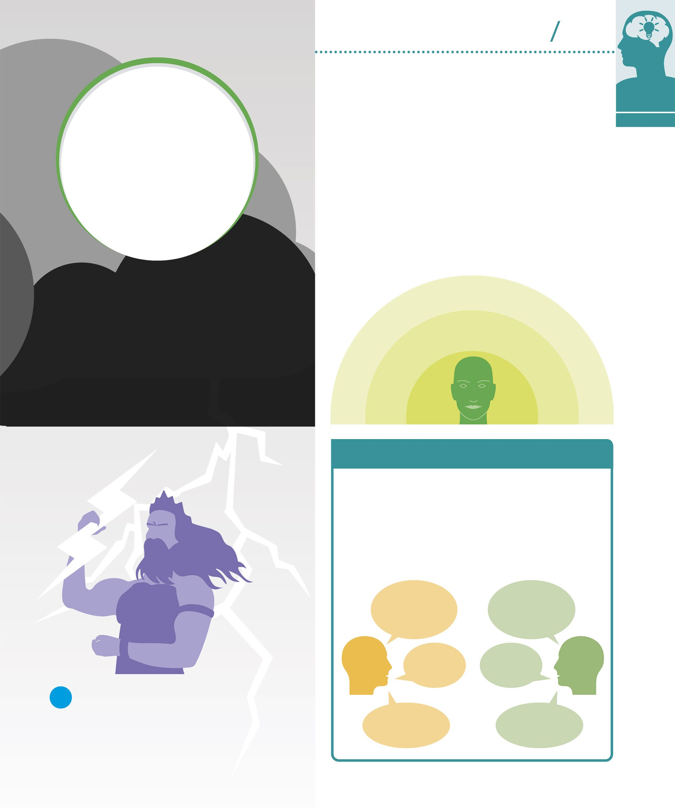
Tầng sâu nhất của niềm tin, và cũng là niềm tin cốt lõi (core beliefs), chính là những nguyên tắc dẫn dắt hành động của ta (các quá trình). Chính hành động của ta sau đó quyết định kết quả nhận được. Khi muốn thay đổi cuộc sống, ta thường tập trung vào kết quả vì đó là thứ dễ thay đổi nhất trong ngắn hạn. Tuy nhiên, để thúc đẩy sự thay đổi lâu dài, ta cần thay đổi thói quen, và để làm được điều đó, ta có thể cần xem xét lại niềm tin cốt lõi của mình.
Những người có niềm tin cực đoan có thể không dễ dàng chuyển từ khái niệm này sang khái niệm khác—một cách tư duy được gọi là sự cứng nhắc nhận thức (cognitive inflexibility).
Niềm tin cốt lõi Niềm tin cốt lõi của bạn đan xen với cách bạn nhìn nhận bản thân và thế giới quanh mình, vì thế chúng là niềm tin được giữ chặt nhất và khó thay đổi nhất.
NIỀM TIN LẬP LUẬN
Có ba loại niềm tin: niềm tin sự thật, niềm tin sở thích và niềm tin hệ tư tưởng. Nếu hai người tranh luận về niềm tin sự thật, chỉ một trong hai có thể đúng, trong khi với niềm tin sở thích thì cả hai đều có thể đúng. Niềm tin hệ tư tưởng rút ra yếu tố từ cả sự thật lẫn sở thích. Trẻ mầm non có thể phân biệt được các loại niềm tin này và nhận ra rằng trong một số trường hợp, cả hai người đều có thể đúng.
SỞ THÍCH
Màu xanh lá cây là màu đẹp nhất
Màu cam là màu đẹp nhất
SỰ THẬT
- 2 + 2 = 4
- 2 + 2 = 5
Giải thích siêu nhiên Bên cạnh việc nhận ra các khuôn mẫu,
3
não người ưu tiên ý định hơn là sự ngẫu nhiên. Vì vậy, ý nghĩ rằng sét được các vị thần cố ý dùng để trừng phạt hành vi xấu nghe thỏa mãn hơn là việc nó chỉ là một sự kiện tự nhiên ngẫu nhiên.
HỆ TƯ TƯỞNG
Không có Chúa
Chỉ có một Chúa
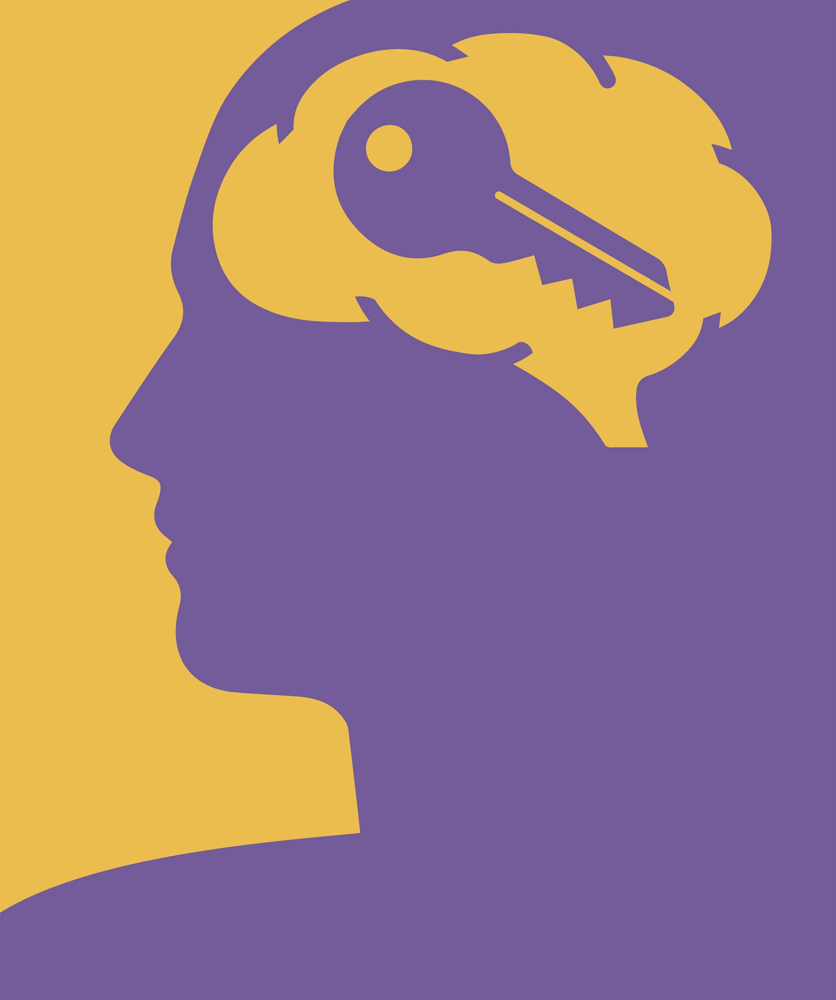